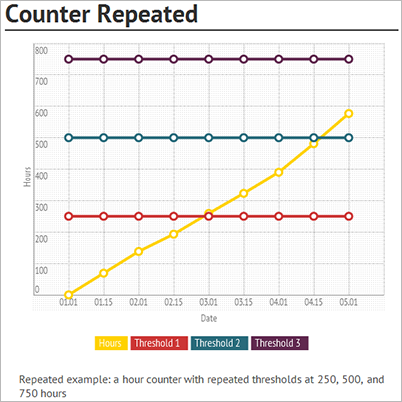

Wartungspläne
Important
Dynamics 365 for Finance and Operations hat sich zu speziell entwickelten Anwendungen entwickelt, mit denen Sie bestimmte Geschäftsfunktionen verwalten können. Weitere Informationen zu diesen Änderungen finden Sie im Dynamics 365-Lizenzierungshandbuch.
Ein Wartungsplan definiert, wann ein vorgeplanter vorbeugender Wartungsauftrag an einer Anlage durchgeführt werden soll. Wartungspläne können sich auf Anlagen, Anlagentypen, funktionale Standorte oder funktionale Standorttypen beziehen, aber zuerst erstellen Sie die Wartungspläne, die in Ihrem Unternehmen verwendet werden sollen.
Ein Wartungsplan kann mehrere Wartungsplanpositionen haben. Wartungsauftragstyp und -intervall werden auf der Wartungsplanposition angegeben. Es gibt zwei Typen Wartungsplanpositionen:
- Zeit
- Zähler
Wartungsplanpositionen des Typs „Zeit“ werden für die wiederkehrende geplante Wartung auf der Grundlage eines festen Zeitintervalls verwendet. vom Typ „Zähler“ werden für die planmäßige Wartung oder reaktive Instandhaltung auf der Grundlage von Anlagenzählererfassungen verwendet. Ein Wartungsplan kann mehrere Wartungsplanpositionen beider Typen beinhalten.
Note
Wenn für einen Zählertyp einer Anlage keine Zählerwerte registriert wurden, entfallen die Wartungsplanpositionen.
Zunächst legen Sie die Wartungspläne an, die Sie für Ihre präventiven Wartungsarbeiten benötigen, und wählen die Anlagentypen, Anlagen, funktionale Standorttypen und funktionaler Standorte aus, die mit jedem Wartungsplan verknüpft sein sollen. Anschließend können Sie bei Bedarf auch Wartungspläne zu einer Anlage oder einem funktionalen Standort hinzufügen, was im Inforegister Alle Anlagen > Anlage auswählen > Anlagenwartungspläne oder im Inforegister Alle funktionalen Standorte > funktionalen Standort auswählen > Wartungspläne erfolgt.
Wenn Sie einen Wartungsplan zu Anlagentypen oder funktionalen Standorttypen hinzufügen, bedeutet dies, dass beim Anlegen neuer Anlagen oder funktionaler Standorte mit diesen Anlagentypen oder funktionalen Standorttypen die Anlage oder der funktionaler Standort automatisch zum Wartungsplan hinzugefügt wird. Das Startdatum der Beziehung zu einem Wartungsplan ist das aktuelle Datum, das möglicherweise angepasst werden muss.
Wartungspläne einrichten
In diesem Abschnitt wird beschrieben, wie Wartungsplanpositionen eingerichtet werden und enthält Beispiele dazu, wie sie verwendet werden können.
Klicken Sie auf Anlagenverwaltung > Einstellungen > Vorbeugende Wartung > Wartungspläne.
Klicken Sie auf Neu, um eine neue Sequenz zu erstellen.
Geben Sie eine Kennung im Feld Wartungssequenz und einen Namen im Feld Name ein.
Wählen Sie im Feld Datum planen das Startdatum ein, ab dem die Planung auf dem Wartungsplan durchgeführt werden kann. Beachten Sie, dass zeitabhängige Wartungsplanpositionen andere Plandaten haben können.
Wählen Sie „Ja“ in der Schaltfläche Aktiv, um den Wartungsplan zu aktivieren.
Note
Wenn Sie einen Wartungsplan deaktivieren, werden beim Ausführen eines terminierten Wartungsplanauftrags keine Zeitplaneinträge angelegt.
Die Felder Toleranztage vor und Toleranztage nach beziehen sich auf Wartungsplanpositionen, in denen das Kontrollkästchen Überschneidende Wartungsaufträge unterdrücken aktiviert ist (siehe Schritt 17). Die „Toleranz“-Felder dienen dazu, das Intervall in Tagen zu verlängern, in denen bei Überschneidung mehrerer Wartungspläne der umfassendste / größte Job bei der Wartungsplanterminierung als Wartungszeitplanpostition angelegt wird, während häufigere, sich überschneidende Jobs bei der Wartungsplanterminierung entfallen. Geben Sie im Feld Toleranztage vor die Anzahl der Tage ein, z.B. „2“.
Wenn Sie einen Wert in Toleranztage vor eingefügt haben, geben Sie auch die Anzahl der Tage in das Feld Toleranztage nach ein, z.B. „2“.
Note
Das in diesem und dem vorherigen Schritt beschriebene Beispiel bedeutet, dass, wenn sich mehrere Wartungsplanpositionen überschneiden und für eine oder mehrere Zeilen Überschneidende Wartungsaufträge unterdrücken ausgewählt werden, der Zeitraum des Weglassens von Wartungszeitplanpositionen auf insgesamt fünf Tage verlängert wird (das erwartete Startdatum auf der Wartungszeitplanposition und zwei Tage vor und zwei Tage nach diesem Datum).
Die Felder in der Gruppe Details auf dem Inforegister Details zeigen die Anzahl der Wartungsplanpositionen, die auf dem Wartungsplan eingerichtet sind, sowie die Anzahl der Anlagen und funktionaler Standorte, die sich auf den Wartungsplan beziehen.
Wählen Sie auf dem Inforegister Positionen Zeitposition hinzufügen oder Anlagenzählerposition hinzufügen, um eine neue Wartungsplanposition zu erstellen.
Fügen Sie eine Beschreibung für die Position in das Feld Arbeitsauftragsbeschreibung ein. Die Beschreibung wird in die zugehörigen Arbeitsaufträge übernommen.
Wählen Sie im Feld Wartungsauftragstyp den Auftragstyp aus, dem die Wartungsplanposition zugeordnet ist.
Wählen Sie in den Feldern Wartungsauftragstypvariante und Branche die Variante und Branche aus, die sich auf den Wartungsauftragstyp beziehen.
n den Feldern Innerhalb von Tagen beenden und Innerhalb von Stunden beenden können Sie das erwartete Enddatum in Tagen oder Stunden eingeben. Das erwartete Enddatum wird relativ zum erwarteten Startdatum eingefügt, das beim Anlegen von Wartungszeitplanpositionen berechnet wird. Sie können beispielsweise „7“ in das Feld Innerhalb von Tagen beenden einfügen, um anzugeben, dass der betreffende Auftrag innerhalb einer Woche nach dem erwarteten Startdatum abgeschlossen sein soll.
Wählen Sie im Feld Intervalltyp die Art des Intervalls, das auf der Wartungsplanposition verwendet werden soll, z.B. „Wiederholt...“ oder „Einmal...“. Eine Beschreibung der Beziehung zwischen Intervalltypen und Positionstypen finden Sie in der folgenden Tabelle [Übersicht Intervalltypen](## Interval types overview).
Das Feld Periode bezieht sich nur auf zeitabhängige Positionstypen. Wählen Sie den Periodentyp aus, der der Periodenhäufigkeit zugeordnet ist.
Geben Sie im Feld Periodenhäufigkeit ein, wie oft die Position für die Planung von vorbeugenden Wartungsaufträgen verwendet werden soll. Beispiel: Wenn Sie eine Position vom Typ „Zähler“ angelegt haben und Ihr Zähler die Produktionsmenge ist und Sie in diesem Feld die Nummer „20000“ eingeben, werden in der vorbeugenden Wartungszeitplanung immer dann neue Wartungsreihenfolgepositionen angelegt, wenn Sie voraussichtlich 20.000 weitere Artikel produzieren werden.
Das Kontrollkästchen Überschneidende Wartungsaufträge unterdrücken bezieht sich sowohl auf zeit- als auch auf zählerbezogene Positionstypen. Aktivieren Sie das Kontrollkästchen, um Wartungszeitplaneinträge zu löschen, die am selben Tag erstellt wurden. Dies ist z.B. dann relevant, wenn Sie eine 1-monatige Prüfposition, eine 6-monatige Prüfposition und eine 1-Jahres-Prüfposition angelegt haben. Für die 1-jährige Prüfung möchten Sie nur diese Prüfung durchführen, nicht die beiden anderen Prüfung, die ebenfalls in den Zeitrahmen passen würden. Um dieses Beispiel korrekt einzurichten, richten Sie die 1-Jahres-Prüfposition als erste Position, die 6-Monatsposition als zweite Position und die 1-Monatsposition als dritte Position ein und aktivieren das Kontrollkästchen Überschneidende Wartungsaufträge unterdrücken für die 1-Monats- und 6-Monatspositionen. Auf diese Weise stellen Sie sicher, dass bei Erreichen der 1-Jahres-Marke die Prüfungen für einen Monat und sechs Monate entfallen und nur für die 1-Jahres-Prüfposition eine Wartungszeitplanposition angelegt wird.
Note
Das in diesem Schritt beschriebene Beispiel zeigt, dass der umfangreichste Auftrag, der die größte Anzahl von Aufgaben enthält und nicht so oft ausgeführt wird, immer als erste Position eingefügt werden sollte. Die häufigeren Aufträge werden dann als separate Positionen in der Reihenfolge der Häufigkeit eingefügt, so dass der häufigste Auftrag am Ende der Liste steht.
Das Feld Zähler bezieht sich nur auf zählerbezogene Positionstypen. Wählen Sie den Zählertyp aus, der auf der Position verwendet werden soll. Wenn ein Zählertyp auf einer zugehörigen Anlage nicht aktiv ist, entfällt die Wartungsplanposition.
Das Feld Anlagenzähler-Planungshorizont in Tagen bezieht sich nur auf zählerbezogene Positionstypen. Fügen Sie eine Zahl ein, die angibt, wie viele Tage rückwirkende Zählererfassungen überprüft werden, wenn die Terminierung des Wartungsplans durchgeführt wird. Das heißt, wie weit zurück werden Daten (bestehende Zählererfassungen) als Grundlage für die Berechnung des Trends verwendet, der bestimmt, wie viele Wartungszeitplanpositionen angelegt werden.
Beispiel: Wenn einmal im Monat Zählererfassungen erwartet werden, können Sie in diesem Feld die Nummer '365' eintragen, da die Terminierung des Wartungsplans immer auf der Grundlage der letzten 12 Monate erfolgt und somit Wartungszeitplanpositionen auf der Grundlage des Trends des vergangenen Jahres erstellt werden. Wenn Sie hingegen in diesem Feld die Zahl „10“ eingeben, erwarten Sie, dass die Zeiterfassung häufiger, z.B. täglich, vorgenommen werden. Das bedeutet, dass bei der Terminierung von Wartungszeitplänen die Zählerregistrierungen der letzten 10 Tage als Grundlage für die Terminierung von Wartungszeitplanpositionen verwendet werden.
Das Feld Plandatum bezieht sich nur auf zeitabhängige Positionstypen. Wenn die Wartungsplanposition ein anderes Planungsdatum als der gesamte Wartungsplan besitzt, aktivieren Sie ein Datum im Feld Plandatum auf der Position .
Wählen Sie im Feld Leistungsebene können Sie eine Wartungsarbeitsauftrags-Leistungsebene als weitere Abgrenzung auf der Wartungsplanposition auswählen - als Leistungsebene auf Arbeitsaufträge.
Aktivieren Sie das Kontrollkästchen Automatische Erstellung, wenn bei der Terminierung von Wartungsplänen ein Arbeitsauftrag automatisch entsprechend der ausgewählten Wartungsplanposition erstellt werden soll.
Wenn Sie das Kontrollkästchen Automatische Erstellung aktiviert haben, können Sie im Feld Arbeitsauftragstyp einen Arbeitsauftragstyp für den automatisch erstellten Arbeitsauftrag auswählen. Wenn Sie das Kontrollkästchen Automatische Erstellung aktiviert haben und in diesem Feld keinen Arbeitsauftragstyp auswählen, wird der unter Anlagenverwaltung > Einstellungen > Anlagenverwaltungsparameter > Arbeitsaufträge-Link > Vorbeugender Arbeitsauftragstyp ausgewählte Arbeitsauftragstyp verwendet.
Verwenden Sie die Felder Saison von und Saison bis, um eine zeitbasierte wiederholte Wartungsplanposition innerhalb eines Zwölfmonatszeitraums zu erstellen. Beispiel: Geräte zur Pflege von Grünflächen erfordern eine Wartung jedes Frühjahr innerhalb eines vordefinierten Zeitraums. Geben Sie das Startdatum des zu wiederholenden Zeitraums in das Feld Saison von ein.
Geben Sie das Enddatum des zu wiederholenden Zeitraums in das Feld Saison bis ein.
Im Feld Resultierende Periode wird die zu wiederholende aktuelle Periode angezeigt. Wenn die aktuelle Periode abgelaufen ist und Sie ein neues Jahr beginnen, wird die in diesem Feld angezeigte Periode aktualisiert, um die nächste Periode in der Wiederholungssequenz wiederzugeben.
Wählen Sie im Inforegister Anlagen die Anlagen aus, die mit dem Wartungsplan verknüpft sein sollen.
Wählen Sie im Inforegister Anlagentypen die Anlagentypen aus, die mit dem Wartungsplan verknüpft sein sollen.
Wählen Sie im Inforegister Funktionaler Standort die funktionalen Standorte aus, die mit dem Wartungsplan verknüpft sein sollen. Bei Bedarf können Sie das Setup spezifischer gestalten, indem Sie einen verwandten Anlagentyp, Hersteller und Modell auswählen.
Wählen Sie im Inforegister Funktionaler Standorttyp die funktionalen Standorttypen aus, die mit dem Wartungsplan verknüpft sein sollen.
Note
Wenn Arbeitsaufträge für Anlagen, die unter eine Lieferantengarantie fallen, manuell erstellt werden, erscheint ein Dialogfenster, um den Benutzer auf die Garantie aufmerksam zu machen Die Erstellung des Arbeitsauftrags kann dann abgebrochen werden. Bei Arbeitsaufträgen, die automatisch angelegt werden, entfällt die Prüfung auf eine Garantiebeziehung.
Übersicht der Intervallarten
| Intervalltyp und Beschreibung | Positionstyp: Zeit | Positionstyp: Zähler |
|---|---|---|
| Intervalltyp: Wiederholt ab Plandatum Die Zählung beginnt ab dem verwendeten Plandatum. Wenn Sie Wartungspläne terminieren, werden bei Erreichen des Intervalls Wartungsplanpositionen erstellt. | Es wird das Plandatum auf der Wartungsplanposition verwendet. Wenn kein Plandatum für die Position ausgewählt wurde, wird das Plandatum des Wartungsplans verwendet. Beispiel: Wenn im Feld Periodenhäufigkeit die Zahl „3“ eingegeben und im Feld Periode „Jahr“ ausgewählt wird, wird alle 3 Jahre eine neue Wartungszeitplanposition angelegt. | Es wird das Plandatum der Wartungsplanposition verwendet. Wenn der Zähler ersetzt wurde, wird das letzte Ersetzungsdatum als Plandatum verwendet. |
| Intervalltyp: Wiederholung ab Startdatum Die Zählung beginnt ab dem Startdatum der Anlagenbeziehung. Das Datum in der Detailansicht Alle Anlagen > Inforegister Anlagenwartungspläne > Feld Startdatum oder auf der Detailansicht Alle funktionalen Standorte > Inforegister Wartungspläne > Feld Startdatum ausgewählt. Wenn Sie Wartungspläne terminieren, wird bei Erreichen des Intervalls eine Wartungsplanposition erstellt. | Es wird das Startdatum der Wartungsplanposition auf der Anlage oder dem funktionalen Standort verwendet. Wenn dieses Feld leer ist, wird das Plandatum für den Wartungsplan verwendet. | Es wird das Startdatum der Wartungsplanposition auf der Anlage oder dem funktionalen Standort verwendet. Wenn dieses Feld leer ist, wird das Plandatum für den Wartungsplan verwendet. |
| Intervalltyp: Wiederholt vom letzten Arbeitsauftrag Die Zählung beginnt mit dem tatsächlichen Enddatum und der tatsächlichen Endzeit des letzten Arbeitsauftrags, der auf der Anlage mit dem bestimmten Wartungsauftragstyp/Wartungsauftragstypvariante/Handelskombination abgeschlossen wurde. Dieses Datum und diese Uhrzeit wird im Feld Tatsächliches Ende in der Detailansicht Alle Arbeitsaufträge angezeigt. | Das tatsächliche Enddatum und die tatsächliche Uhrzeit der Anlage mit dem bestimmten Arbeitsauftrag/der Wartungsauftragstypvariante/der Handelskombination. Wird kein abgeschlossener Arbeitsauftrag gefunden, wird stattdessen eine der in der oben beschriebenen Intervallart „Wiederholt ab Startdatum“ verwendeten Daten verwendet. | Das tatsächliche Enddatum und die tatsächliche Uhrzeit des auf der Anlage abgeschlossenen Arbeitsauftrags und der Wartungsauftragstyp / Wartungsauftragstypvariante / Handelskombination. wird verwendet. Wurden das Enddatum und die Endzeit auf dem Arbeitsauftrag leer gelassen, wird stattdessen eine der in der oben beschriebenen Intervallart „Wiederholt ab Startdatum“ verwendeten Daten verwendet. |
| Intervalltyp: Einmalig ab Plandatum Siehe Beschreibung für den Intervalltyp „Wiederholt ab Plandatum“ oben. Der einzige Unterschied besteht darin, dass diese Intervallart nur einmal verwendet werden soll. | Siehe Beschreibung für den Intervalltyp „Wiederholt vom Plandatum“ oben. Dieses Intervall wird typischerweise für einen einmaligen Wartungs- oder Serviceauftrag verwendet. | Siehe Beschreibung für den Intervalltyp „Wiederholt vom Plandatum“ oben. Dieses Intervall wird typischerweise für einen einmaligen Wartungs- oder Serviceauftrag verwendet. Hinweis 1: Diese Intervallart ist nur relevant, wenn der Zähler bei jeder Wartungs- oder Instandhaltungsmaßnahme ausgetauscht wird. Wenn aus irgendeinem Grund ein Zähler vor Ablauf des geplanten Intervalls ausgetauscht wurde, wird für den Auftrag ab dem Zeitpunkt des Zählerwechsels eine neue Zeit berechnet. Hinweis: 2 Wenn der Zähler beim Abschluss der Wartungs- oder Servicearbeiten ausgetauscht wird, fungiert dieser Intervalltyp als obiger Intervalltyp „Wiederholt vom Plandatum“. |
| Intervalltyp: Einmalig ab Startdatum Siehe Beschreibung für den Intervalltyp „Wiederholt ab Startdatum“ oben. Der einzige Unterschied besteht darin, dass diese Intervallart nur einmal verwendet werden soll. | Siehe Beschreibung für den Intervalltyp „Wiederholt vom Startdatum“ oben. Dieses Intervall wird typischerweise für einen einmaligen Wartungs- oder Serviceauftrag verwendet. | Siehe Beschreibung für den Intervalltyp „Wiederholt vom Startdatum“ oben. Dieses Intervall wird typischerweise für einen einmaligen Wartungs- oder Serviceauftrag verwendet. Hinweis 1 vorstehend gilt auch für diesen Intervalltyp. Hinweis: 3 Wenn der Zähler beim Abschluss der Wartungs- oder Servicearbeiten ausgetauscht wird, fungiert dieser Intervalltyp als obiger Intervalltyp „Wiederholt vom Startdatum“. |
| Intervalltyp: Einmal oberhalb erreicht Diese Intervallart bezieht sich nur auf Zähler und dient zur Kennzeichnung einer Obergrenze, die auf der Wartungsplanposition eingestellt ist. Wartungsplaneinträge haben das erwartete Startdatum und die erwartete Uhrzeit der Zählererfassung, d.h. diese Einträge werden mit einem erwarteten Startdatum erstellt, das gleich oder früher als das Systemdatum ist. | N/V | Das Zählerintervall zeigt eine Obergrenze an. Wenn dieser Grenzwert beim Erstellen einer Zählerregistrierung überschritten wird, wird beim Planen der vorbeugenden Wartung eine Wartungszeitplanposition angelegt. |
| Intervalltyp: Einmal unterhalb erreicht Diese Intervallart bezieht sich nur auf Zähler und dient zur Kennzeichnung einer Untergrenze, die auf der Wartungsplanposition eingestellt ist. Wartungsplaneinträge haben das erwartete Startdatum und die erwartete Uhrzeit der Zählererfassung, d.h. diese Einträge werden mit einem erwarteten Startdatum erstellt, das gleich oder früher als das Systemdatum ist. | N/V | Das Zählerintervall zeigt eine Untergrenze an. Wenn dieser Grenzwert beim Erstellen einer Zählerregistrierung unterschritten wird, wird beim Planen der vorbeugenden Wartung eine Wartungszeitplanposition angelegt. |
| Intervalltyp: Verknüpft ab Startdatum Dieser Intervalltyp erstellt eine Wartungsplanposition nur einmal. Ein Wartungsplan kann mit dieser Intervallart mehrere Wartungsplanpositionen enthalten, die miteinander verknüpft sind. Normalerweise erstellen Sie einen Wartungsplan, der nur Positionen dieses Intervalltyps enthält. Wartungsplanpositionen werden angelegt, indem die Wartungsplanposition identifiziert wird, die das erste erwartete Startdatum und die erste erwartete Startzeit hat. | Siehe Beschreibung für „Einmal ab Startdatum“ oben. Beispiel: Sie legen in einem Wartungsplan für einen Serviceeinsatz am Auto zwei Positionen an: eine zeitabhängige Position mit einem Zeitraum von einem Jahr und eine zählerabhängige Position mit einem Kilometerlimit von 25.000 km. Für die zuerst erreichte Grenze wird eine Wartungsplanposition angelegt. Für diesen Positionstyp legen Sie die Position mit der 1-Jahres-Periode an. | Siehe Beschreibung für „Einmal ab Startdatum“ oben. Beispiel: Sie legen in einem Wartungsplan für einen Serviceeinsatz am Auto zwei Positionen an: eine zeitabhängige Position mit einem Zeitraum von einem Jahr und eine zählerabhängige Position mit einem Kilometerlimit von 25.000 km. Für die zuerst erreichte Grenze wird eine Wartungsplanposition angelegt. Für diesen Positionstyp legen Sie die Position mit der 25.000 km Grenze an. Beispiel für die Erstellung von zwei Zählerpositionen: Sie können auch einen Wartungsplan mit zwei verknüpften, zählerabhängigen Positionen einrichten, bei denen die erste Position eine Grenze von 10.000 produzierten Artikeln hat und die zweite Position sich auf die Maschine oder den Arbeitsplatz bezieht, die nach 3.000 Stunden Service benötigt. |
| Intervalltyp: Verknüpft ab letztem Arbeitsauftrag Dieser Intervalltyp erstellt neue Wartungsplanpositionen nach jedem abgeschlossenen Arbeitsauftrag. Ein Wartungsplan kann mit dieser Intervallart mehrere Positionen enthalten, die miteinander verknüpft sind. Normalerweise erstellen Sie einen Wartungsplan, der nur Wartungsplanpositionen dieses Intervalltyps enthält. Wartungsplanpositionen werden angelegt, indem die Wartungsplanposition identifiziert wird, die das erste erwartete Startdatum und die erste erwartete Startzeit hat. | Dieser Intervalltyp funktioniert grundsätzlich wie oben beschrieben als „Verknüpft ab Startdatum“. Der einzige Unterschied ist das Datum, auf dem die Intervallart basiert. Das verwendete Datum ist das aktuelle Datum und die aktuelle Uhrzeit des letzten auf der Anlage abgeschlossenen Arbeitsauftrags und der Wartungsauftragstyp / die Variante des Wartungsauftragstyps / Handelskombination. | Dieser Intervalltyp funktioniert grundsätzlich wie oben beschrieben als „Verknüpft ab Startdatum“. Der einzige Unterschied ist das Datum, auf dem die Intervallart basiert. Das verwendete Datum ist das aktuelle Datum und die aktuelle Uhrzeit des letzten auf der Anlage abgeschlossenen Arbeitsauftrags und der Wartungsauftragstyp / die Variante des Wartungsauftragstyps / Handelskombination. |
Note
Wenn Wartungszeitplanpositionen für zeitabhängige Wartungsplanpositionen angelegt werden, liegt die erwartete Zeit immer am Anfang des Tages. Bei zählerbasierten Wartungsplanpositionen kann die erwartete Zeit zu jeder Tageszeit liegen.
Nachfolgend finden Sie Beispiele für den Aufbau von zeit- und zählerbezogenen Wartungsplanpositionen:
Beispiel 1 - Zeitabhängige Wartungsplanposition: Ein Schmierungsauftrag kann in einem festen Intervall eingerichtet werden, das einmal pro Woche stattfindet. Wählen Sie dazu im Feld Intervallart „Wiederholt ab Plandatum“. Die folgende Abbildung zeigt ein Beispiel.

Beispiel 2 - zeitbasierte Wartungsplanposition: Es kann ein Prüfauftrag eingerichtet werden, der etwa einmal pro Woche durchgeführt wird. Wählen Sie dazu im Feld Intervallart „Wiederholt ab letztem Arbeitsauftrag“. Die folgende Abbildung zeigt ein Beispiel.

Beispiel 3 - Zählerbasierte Wartungsplanzeile: Die folgende grafische Darstellung zeigt einen Stundenzähler, bei dem nach Ablauf von 250 Stunden jeweils eine neue Wartungszeitplanposition angelegt wird. Der Intervalltyp für diese zählerabhängige Position ist „Wiederholung ab Startdatum“. Das Startdatum ist das Startdatum der zugehörigen Anlagen in der Detailansicht Alle Anlagendetails > Anlagenwartungspläne Inforegister > Startdatum Feld oder Detailansicht Funktionaler Standort > Inforegister Wartungspläne > Feld Startdatum. Dies ist ein Beispiel für einen präventiven Wartungsplan, da die Wartungszeitplanposition bei jedem Erreichen des Schwellenwerts (+ 250) automatisch angelegt wird.

Beispiel 4 - Zählerbasierte Wartungsplanposition: Die folgende grafische Darstellung zeigt eine Abnahme des Zählwertes, die den Verschleiß von Bremsbelägen misst. Eine Wartungszeitplanposition wird erstellt, wenn eine Zählererfassung unter 20 mm auf dem Bremsbelag angelegt wird. Der Intervalltyp für diese zählerabhängige Position ist „Einmal unterhalb erreicht“ oder „Einmal ab letzten Startdatum“. Dies ist ein Beispiel für einen reaktiven Wartungsplan, da die Wartungszeitplanposition erst angelegt wird, wenn ein Maß unter 20 mm registriert wird.
Beispiel 5 - Zählerbasierte Wartungsplanposition: Die folgende grafische Darstellung zeigt einen Zähler mit einem Schwellenwert von -18° Celsius. Eine Wartungszeitplanposition wird angelegt, wenn eine Zählerregistrierung über -18° Celsius erfolgt. Der Intervalltyp für diese zählerorientierte Position ist „Einmal oberhalb erreicht“. Dies ist ein Beispiel für einen reaktiven Wartungsplan, da die Wartungszeitplanposition erst angelegt wird, wenn eine Messung über -18° Celsius registriert wird.
- Wenn Sie eine neue Anlage anlegen und diese Anlage einen Anlagentyp verwendet, der sich auf einen Wartungsplan bezieht, wird der Wartungsplan automatisch in das Inforegister Alle Objekte > Anlagenwartungspläne eingefügt. Außerdem werden in den Anlagentypstandards auf dem Inforegister Wartungspläne die zugehörigen Wartungspläne automatisch eingefügt.
- Wenn Sie Anlagentypen oder funktionale Standorttypen in Wartungsplänen hinzufügen oder entfernen, wirkt sich diese Änderung nur auf neu angelegte Anlagen aus, nachdem Sie die Änderung vorgenommen haben.
- Wenn Sie in Wartungsplänen Anlagen oder funktionale Standorte hinzufügen oder entfernen, wird diese Änderung automatisch im Inforegister Alle Anlagen > Anlagenwartungspläne oder im Inforegister Alle funktionale Standorte > Wartungspläne aktualisiert.
Die folgende Abbildung zeigt das Beispiel eines „LKW-Service“-Wartungsplans auf der Seite Wartungspläne.
Hinzufügen eines Wartungsplans zu einer Anlage
Klicken Sie auf Anlagenverwaltung > Allgemein > Anlagen > Alle Anlagen oder Aktive Anlagen.
Wählen Sie die Anlage, auf der Sie einen Wartungsplan einrichten möchten, und klicken Sie auf Bearbeiten.
Klicken Sie auf dem Inforegister Anlagenwartungspläne auf Position hinzufügen, um einen Wartungsplan zur Anlage hinzuzufügen.
Wählen Sie im Feld Wartungsplan den entsprechenden Wartungsplan aus.
Wählen Sie im Feld Startdatum das Datum aus, ab dem die Planung vorbeugender Wartungsaufträge durchgeführt werden kann.
Klicken Sie auf Speichern. Das Feld Aktiv wird automatisch aktualisiert.
Die folgende Abbildung zeigt das Beispiel eines Wartungsplans, der auf einer Anlage auf der Seite Alle Anlagen eingerichtet wurde.